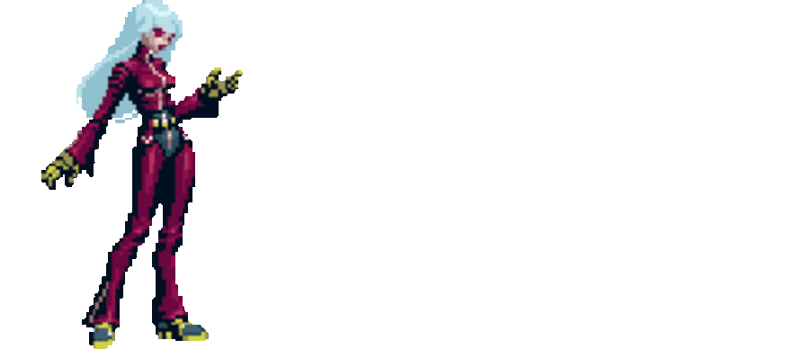

Kula Diamond
Origem
O ano é 1999. O torneio Kof desse ano terminou com a derrota de Krizalid, por ter falhado em convencer o quartel NESTS, e assim o clone do Kyo e imediatamente eliminado. Depois o término do projeto de Krizalid, a próxima operação estava a caminho. Certamente levará tempo para a NESTS reunir forças para conseguir realizar seus planos malévolos, mas um de seus agentes mais importantes, esta ameaçando acabar com eles com sua própria arma: O Canhão Zero.Para acabar com a ovelha negra da organização, a NESTS começa a criar sua mais nova arma humana...
Um ano depois, ano 2000, Zero do seu primeiro passo: ele toma o lugar de Ling, um mercenário muito importante, e organiza o torneio Kof para reunir energia de luta suficiente para carregar seu canhão. A NESTS se prepara para mostra a forca de sua nova arma. Seu nome: Kula Diamond, conhecida como a 'anti-K'. Essa bela jovem, com uma aparência infantil e instinto de uma assassina, foi desenhada de uma forma totalmente diferente de K' e Krizalid. Seu poder não vinha das poderosas chamas da família Kusanagi, mas sim do elemento rival do fogo: O gelo. Com sua roupa de couro e suas luvas, que a indicavam como uma criação da NESTS, Kula começa sua missão: eliminar todos os traidores da NESTS.
Kula e rapidamente despachada para Southtown, perto do esconderijo do Zero. Ela é acompanhada pela Candy, uma cyborg assassina sem sentimentos humana, criada para ficar de olho na Kula e evitar qualquer possível traição. Kula e Candy são deixadas na marina de Southtown, e Kula imediatamente começa sua busca. Após um tempo procurando, Candy acha dois ex-agentes: Maxima, e o K' original. Kula deve elimina-los sem dó, de acordo com seus superiores. Para mostrar seu poder, Kula lança uma aura de gelo, congelando toda a marina.Quando ela chega perto de seu objetivo, ela só encontra K'. Para ela tudo bem, pois um só alvo fica mais fácil.Então, começa a batalha entre Kula e K', a batalha com dois elementos.
A luta e dura. Ambos lutadores usam golpes com as mesmas técnicas.O comportamento violento de K' tem um contraste com a serenidade da Kula, e todos ataques são anulados.Sem mais opção, K' e Kula recorrem a suas ultimas técnicas. Kula invoca uma poderosa rajada de gelo, que faz K' desaparecer. Kula tem certeza de sua vitória, porém K' reaparece recuperado, mais forte que antes. Dessa fez foi difícil para Kula evitar o poderoso fogo e K'. Se não fosse por uma barreira de gelo, ela teria virado cinzas.Porém K' fica cansado. Kula o manda para Zero. Vendo isso, Candy sabia que isso era razão o suficiente para eliminar a Kula, por ela não ter cumprido sua tarefa. Porém a humanidade pura que existe sobre a fria aparência dela, mexe com o coração mecânico da Candy, e parece que recebe vida. Kula sorri, e diz a Candy que ainda há uma coisa a fazer.
Kula pede para Candy para leva-la ao espaço sideral, onde está o Canhão Zero. Sua energia de gelo iria ajuda-la manter o oxigênio em seus pulmões, então não havia problema algum. Assim que chega no Canhão, Kula mexe nos controles para que ele possa ser controlado manualmente. Lá, ela espera pelo sinal das duas agentes da NESTS para acabar com a vida de Zero.Assim que o sinal chega, Kula dispara o canhão. O disparo não só acaba com a vida de Zero, mas também destrói toda Southtown. Depois da destruição, Kula recebe a confirmação do fim de sua missão. Kula nega, e diz que há mais uma coisa a fazer: destruir o canhão Zero. As duas agentes dizem que é loucura, mas Kula está decidida. Mais uma vez, Candy amolece com o interesse da Kula em ajudar o tal amor pela vida. Kula jura que o canhão Zero nunca mais matará alguém, e imediatamente destrói a maquina. Kula cai direto na atmosfera, onde ela tem quase certeza que irá queimar quando entrar. Saindo do nada, Candy agarra a Kula, e cai na atmosfera como uma estrela
Quando Kula acorda, ela está e Southtown...Ou melhor, o que sobrou dela. As duas agentes Diana e Foxy ficam preocupadas em saber como ela está, mas Kula olha envolta, ela só consegue se preocupar com a pessoa que salvou sua vida: Sua única amiga, Candy. Candy queimou completamente, sobrando apenas parte de sua cabeça. Candy ficou repetindo a palavra 'amiga'. Kula chora, e promete que um dia Candy terá orgulho dela.
No ano seguinte, Kula ficou coberta de culpa por ter perdido a Candy. Os executivos da NESTS tentaram engana-la, dizendo que Candy a ligava, para que as habilidades de luta da Kula não deteriorassem por causa de sua depressão. Mas Foxy sabia que ela precisava de uma distração muito maior que isso.Enganar a Kula daquela maneira não era u método muito confiável.Então, Foxy decide leva-la ao próximo torneio de Kof, junto com os novos agentes, Angel e o encrenqueiro K9999.Kula entra para o time da NESTS, sem saber o plano mau que estava por trás dela.
Os incríveis poderes de gelo da Kula foram postos em teste no novo torneio Kof. Sendo a primeira vez que ela luta como uma competidora oficial, Kula deu o máximo de si para ajudar a Foxy e para tentar afastar o incidente da Candy de sua cabeça. Depois de muitas batalhas, Foxy diz para Kula esperar as novas ordens da NESTS. Kula e Foxy assistem o time vencedor entrar na nave para a batalha final. Foxy sabe que a nave é apenas um truque da NESTS para levar os lutadores para a base deles no espaço.Mas enquanto a Foxy conta isso a Kula, ela de repente cai no chão, coberta de sangue! K9999 havia a atacado pelas costas com suas mãos! Kula fica chocada e tenta não acreditar. Uma de suas ultimas amigas havia sido morta em seus olhos, pelas pessoas que ela confiava! Não apenas isso, Angel e K9999 também queriam mata-la! Kula começou a queimar sua raiva em ódio, e jurou que eles iriam pagar pelo que fizeram! Mas K9999 diz que um defeito biológico não iria ameaça-los, e então a luta pela sobrevivência começa...
Guiada pela raiva e dor pela perda da Foxy, Kula consegue segurar K9999 e Angel por um tempo. Mesmo assim, a desvantagem de números fica evidente, e Kula começa e ficar fraca com os ataques do K9999 e da Angel. Perto do amanhecer, Kula estava exausta. Ela não conseguia mais evitar os poderosos ataques do K9999. O clone avançado do Kyo tentou acabar com ela, mas Kula fica surpresa quando K' vem para ajuda-la!K' conseguiu escapar da base da NESTS, e agora veio enfrentar K9999. Angel e K9999 são obrigados a recuar e analisar sua situação, porém K9999 jurou que um dia mataria K' e Kula!
Diana, a ultima amiga da Kula, veio para ajuda-la e consolar ela pela perda da Foxy. Ela diz a Kula que elas não tem mais nada com a NESTS, já que eles próprios se destruirão por causa de suas ambições pessoais. Mas Kula olha envolta e percebe que tem muitos amigos novos! Whip, a irmã perdida de K', diz a ela que ela não está mais sozinha, e que esse torneio fez ela ver que tinha mais amigos que imaginava. Candy e Foxy não estavam mais lá, mas ela ainda tinha muitos amigos que ela podia confiar.Kula cai em prantos, e agradeça a Whip pela sua consideração.
Enquanto Diana, Whip e os outros que participaram da destruição da NESTS observavam o a base afundar no oceano, Kula e K' andam juntos pela costa. Kula observa K' andar todo machucado e cansado, porém com sua compostura maneira de sempre. Kula sorri a K' e o pára.Ela então pergunta a ele o que ele pensava agora que a NESTS não existia mais. K' se limitou a dizer, e apenas disse que agora ele tinha uma vida pela frente, e uma vida livre da NESTS e de todos pesadelos que o perseguiam.Kula sorri, já que ela também, tem um mundo inteiro pela frente para descobrir, e muitos amigos para ajuda-la pelo caminho.
Kula pode ter o rotulo de uma impiedosa assassina criada pela NESTS para eliminar todos os traidores que a NESTS teve, e apesar de suas técnicas violentas, Kula tem um coração puro e não deseja machucar as pessoas.Ela apenas segue ordens, e secretamente deseja uma vida normal, longe das pressões de ser uma assassina. Cheia de esperança, Kula representa o lado bom de algo malévolo.
